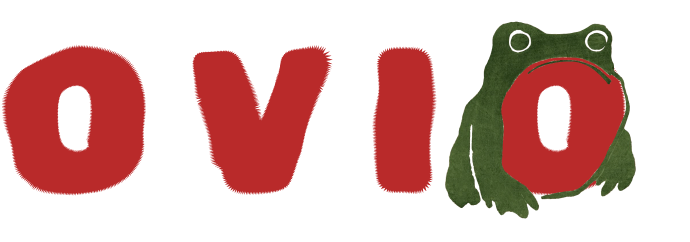
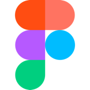
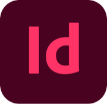
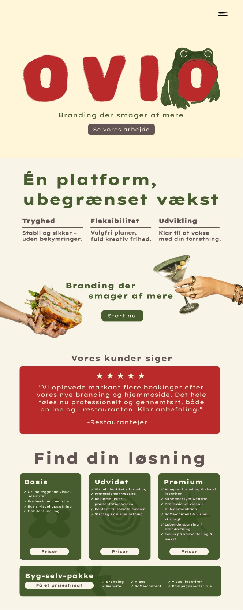
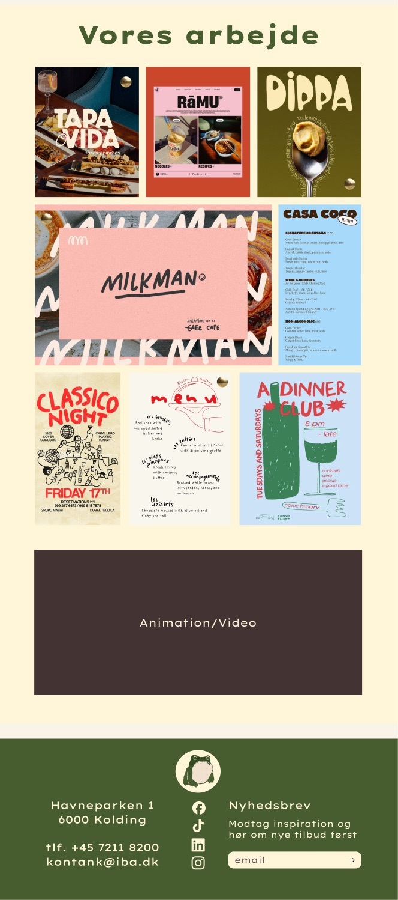
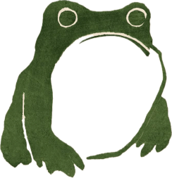

Case study 01

Branding der smager af mere
OVIO is a branding and digital concept built for restaurants and eateries that deliver great food but haven't found a visual voice to match it. The project pairs brand strategy with a responsive website, translating quality you can taste into a brand you remember.
Tools used:


The challenge
Restaurants often pour everything into food and guest experience but neglect their visual and digital presence, even though first impressions now happen online before anyone walks through the door. OVIO had to carve out a credible position in a crowded, price-sensitive market (up against platforms like Wix and Squarespace), while proving through its own branding that the service was worth buying.
Concept
A green frog and bold red letterforms anchor the identity, a deliberate departure from the neutral marks common in branding agencies. The frog signals growth and transformation, drawn with the simple, confident linework of Japanese illustration.


Scroll inside the window to see the whole page.
Colors
- Vanilla cream
#F9F4E8 - Butter cream
#FFF5D9 - Olive green
#475D2F - Black pepper
#433434 - Paprika
#B92A2A
Typography
- Lexend Giga
Main font - Rubik Spray Paint
Logo font
